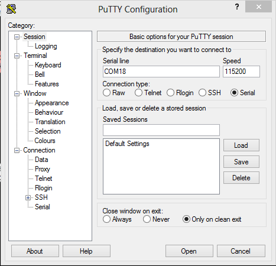

Putty¶
For windows we will be using the Putty terminal for the calibration of the sensors. Although Putty is a SSH and Telnet client, we will be using UART serial communication to display information during this process.
Download link for Putty: https://www.chiark.greenend.org.uk/~sgtatham/putty/latest.html
Download the appropriate platform and complete the installation process.
To configure Putty, first connect the EK-TM4C1294XL to your CPU via the micro-usb cable. Go to Device Manager and under Ports, take note of the COM port being used by the MCU. This port will be used for configuring the Putty display window. In this example, COM18 is being used.
Next, open Putty. for Connection type: select Serial. In the Serial line text editor enter the com port, in our case that is COM18. Finally, in the Speed text editor, select 115200 for the baud rate. Click OPEN.
Up Next: